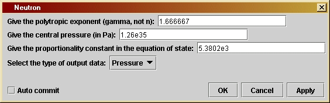
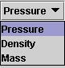

Neutronversion 1.0
© 2003 Bernard Schutz
|
The program allows users to see directly that the relatively small changes that relativity makes in the structure equation, which are described in Investigation 20.3, lead to the existence of an upper limit on the mass of a neutron star. By increasing the central density and finding the point where the mass of the star stops increasing and starts to decrease, the user can determine the point of onset of instability: this is the densest a neutron star can be, and the most massive (for the assumed equation of state, of course).
The parameter window shown here allows the user to determine what kind of star is being modelled. The first parameter is the polytropic exponent g. The default value is the one that gives the best fit to the detailed nuclear physics calculations of the equation of state of dense neutron matter: g = 5/3. The second parameter is the central pressure of the star, in pascals. The third is the proportionality constant k in the equation of state. The pressure and constant k together determine the structure of the star: its mass and radius.
The final parameter is a drop-down list (choice box) that allows the user to choose what data is actually output. To find the mass of the star, for example, you should output the mass as a function of radius and read off the maximum value, which occurs at the surface of the star.
The computer program will produce arbitrarily small-mass stars if you choose the central pressure smaller. Try this to see if you can get something smaller than the 0.02 solar masses that we estimated was the minimum for a neutron star. Does this mean that our discussion in Investigation 20.1 was wrong? Hint: the answer lies in the simplicity of the assumed equation of state that the computer program uses. What key physics does it leave out?
Look up on the internet descriptions of "strange stars" or "strange quark" stars. These are stars where the neutrons have transmuted into more exotic nuclear matter, and they can achieve smaller radii for given masses. Find suitable values for the parameters and use the program to construct quark stars. Show that these, too, have a maximum mass. Can you get above 3 solar masses with them?
Another way to play with the program is to assume we know nothing about nuclear physics, and so the constants given as parameters can be anything at all. While this will lead to neutron stars of large masses, if you choose the parameters in the right way, there is one rule that all your models will obey: no star will have a gravitational radius 2GM/c2 larger than 8/9 of its physical radius. Recall that a black hole is formed if the star's physical radius shrinks to the size of its gravitational radius. Thus, there is a small gap between 8/9 and 1 where there are no static stellar models, no matter what equation of state you assume. This result is called Buchdahl's theorem. Try to break it!
You can make a test of the consistency of general relativity in weak gravitational fields with Newtonian gravity by trying to build a model of a normal star. After all, if general relativity is the right theory of gravity, then the relativistic structure equation should be the right one even for normal stars. Choose parameters to match a model you constructed for the Sun using the program Star. You will have to use the central temperature that is required by Star to compute the value of the porportionality constant k appropriate to the solar model. Use that value in Neutron, with the central pressure and polytropic exponent you used in Star, and see if you can see any differences between the stellar models. There should not be any significant changes!
If you want to change the program you will have to re-compile it, as
explained by the help file Using Triana for
Gravity
from the ground up.
/*
gamma is the polytropic exponent
in the equation of state relating
pressure and density: pressure is
proportional to (density)^(gamma).
It is given by the user in the user
interface window.
*/
private double gamma;
/*
pC is the central pressure of the
star, in pascals. It is given by
the user in the user interface
window.
*/
private double pC;
/*
K is the proportionality constant
in the equation of state, relating
pressure to density^gamma. It is
given by the user in the user
interface window.
*/
private double K;
/*
outputType is a String which governs
what kind of data will be
output. All data is output as a
Curve with x-values being the
radial distance and y-values being
one of three choices: pressure,
density, or mass. In this case,
"mass" means "relativistic mass
interior to the given radius". The
user
chooses one of these four
in the user interface window.
*/
private String outputType;
/*
Two constants needed in the
calculation,
in SI units:
- G is Newton's gravitational
constant
- c2 is the square of the speed
of light.
*/
private double G = 6.672e-11;
private double c2 = 8.98755e16;
public void process() throws Exception {
/*
Define
variables
needed for the calculation:
- gammaRecip
is the reciprocal of gamma, 1/gamma.
- rhoC is
the density at the center of the star.
- scale
is the scale-height of the pressure, roughly the distance
over which the pressure will fall by a factor of 2.
- dr is
the size of the step in radius that the program will make.
- arrays
radius, p (pressure), rho (density), and mass (relativistic
mass function inside the star) hold the values of the associated
physical quantities at the successive radial steps. The arrays
are initially given 2000 elements. The choice of radial step dr
is designed to ensure that the surface of the star (where p = 0)
is reached in fewer than 2000 steps. Then give the values of the
first elements of the arrays.
- lastStep
is an int that will hold the value of the array index
associated with the surface of the star. Set it to zero and
use it as a test of whether the surface has been reached (see below).
- j is a
loop counter.
*/
double gammaRecip =
1.0 / gamma;
double rhoC =
Math.pow(pC
/ K, gammaRecip);
double scale =
Math.sqrt(pC
/ G) / rhoC;
double dr = scale /
400.;
double[] radius = new
double[2000];
double[] p = new
double[2000];
double[] rho = new
double[2000];
double[] mass = new
double[2000];
radius[0] = 0;
p[0] = pC;
rho[0] = rhoC;
mass[0] = 0;
int lastStep = 0;
int j;
/*
Do the
calculation
as long as the top has not been reached.
*/
while ( lastStep ==
0 ) {
/*
As described in the text, we cannot start the loop accurately with the
first points. Instead we compute the values of pressure etc at the
first non-zero radial step (radius[1] = dr) by the approximations given
in the text.
*/
radius[1] = dr;
p[1] = pC;
rho[1] = rhoC;
mass[1] = 4.0 * Math.PI * dr * dr * dr * rhoC/ 3.0;
/*
Do calculation step by step, using the equation of hydrostatic
equilibrium (in the second line of the loop).
*/
for ( j = 2; j < 2000; j++ ) {
radius[j] = radius[j-1] + dr;
p[j] = p[j-1] - G * ( rho[j-1] + p[j-1]/c2 ) * ( mass[j-1] +
4*Math.PI*Math.pow(radius[j-1],3)/c2
) * dr / (radius[j-1] * ( radius[j-1] - 2*G*mass[j-1]/c2) );
if ( p[j] < 0 ) {
lastStep = j; //stop when the pressure goes negative
break;
}
mass[j] = mass[j-1] + 4 * Math.PI * radius[j-1] * radius[j-1] *
rho[j-1]
* dr;
rho[j] = Math.pow( p[j]/K, gammaRecip); //polytropic equation of
state
}
/*
If we reach this point and lastStep is still zero, then we have
used 2000 steps and not yet reached the surface. We must start the
loop again with a larger step dr so that we can reach the surface in
2000 steps. The next line of the code resets the value of dr, and
then when we reach the end-bracket of the "while"-loop the test
in the loop will evaluate to true and the "for"-loop will be
done again with this step-size.
If we reach this point and lastStep is no longer zero, then we
have finished the calculation. The next step (changing dr) will be
executed but we will leave the "while"-loop and so the new value
of dr will not be used.
*/
dr *= 2.;
}
/*
Now prepare
output arrays depending on what output data type has
been
selected
by the user. The arrays are only long enough to
contain
the number of points to the surface of the star. Since
the value
of the variable lastStep is the step where the pressure
first went
negative, if we create arrays of length lastStep then
this value
will be excluded, since such arrays start at index 0
and finish
at index lastStep-1.
*/
double[] finalR = new
double[lastStep];
Curve outData =
null;
String unitLabel = "";
if
(outputType.equals("Pressure"))
{
double[] finalP = new double[lastStep];
for ( j = 0; j < lastStep; j++ ) {
finalR[j] = radius[j];
finalP[j] = p[j];
}
outData = new Curve( finalR, finalP );
unitLabel = " (Pa)";
}
else if
(outputType.equals("Density"))
{
double[] finalRho = new double[lastStep];
for ( j = 0; j < lastStep; j++ ) {
finalR[j] = radius[j];
finalRho[j] = rho[j];
}
outData = new Curve( finalR, finalRho );
unitLabel = " (kg/m^3)";
}
else if
(outputType.equals("Mass"))
{
double[] finalM = new double[lastStep];
for ( j = 0; j < lastStep; j++ ) {
finalR[j] = radius[j];
finalM[j] = mass[j];
}
outData = new Curve( finalR, finalM );
unitLabel = " (kg)";
}
outData.setTitle(outputType);
outData.setIndependentLabels(0,"altitude
(m)");
outData.setDependentLabels(0,outputType
+ unitLabel);
output( outData );
}